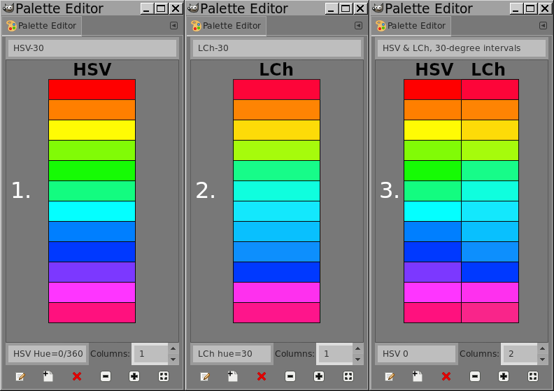

Palettes
#TODO
M3 Palettes...¶
One of the main highlights of Material 3 are the tonal palettes that should meet WCGA standards.
As Google says:
Dynamic color is designed to meet accessibility standards for color contrast. The system of tonal palettes is central to making any color scheme accessible by default.
Combining color based on tonality, rather than hex value or hue, is one of the key systems that make any color output accessible. Products using dynamic color will meet requirements because the algorithmic combinations that an end-user can experience are designed to meet accessibility standards.
So, if Material 3 emphasizes that it is using tonality, in other words lightness as the key value to create a tonal palette, it is clear that Material 3 is NOT using sRGB or sRGB hsl for that matter to calculate the tonal steps.
But what then?
Enter the CIE-Lab colorspace!
CIE colorspaces...¶
The CIE colorspace aims to show colors as the human eye perceives colors and lightness. Within that space, there are different methods like CIE-Lab and CIE-Lch.
Both use the same colorspace, but use different parameters to calculate the colors.
So, lets take some samples from the C1 example and check the lightness values:
| color | hex | m3 | Lightness (sRGB-hsl) | Lightness (CIE-Lch) |
|---|---|---|---|---|
| Primary20 | #68000a | 20% | hsl(354.23, 100%, 20.39%) | lch(19.9%, 49.32, 32.31) |
| Primary40 | #bb1826 | 40% | hsl(354.85, 77.25%, 41.37%) | lch(40.17%, 71.32, 31.31) |
| Secondary40 | #775654 | 40% | hsl(3.43, 17.24%, 39.8%) | lch(39.94%, 14.89, 26.09) |
| Tertiary40 | #735b2e | 40% | hsl(39.13, 42.86%, 31.57%) | lch(40.12%, 29.59, 82.25) |
| Primary60 | #ff5354 | 60% | hsl(359.65, 100%, 66.27%) | lch(59.96%, 74.62, 29.51) |
| Primary80 | #ffb3ac | 80% | hsl(5.06, 100%, 83.73%) | lch(79.89%, 30.53, 28.75) |
| Primary99 | #fcfcfc | 99% | hsl(0, 0%, 98.82%) | lch(98.96%, 0.01, 296.81) |
We see an exact match between the Material 3 lightness and the CIE-Lch lightness value for primary, secondary and tertiary color palettes.
Material 3 is using the CIE-Lch colorspace to determine tonal palettes
On top of the match, there are more CIE-Lch points that make sense to use:
- CIE-Lch is meant for computer screens
- CIE-Lch's colorwheel is nonlinear, which explains the non fixed hue angle differences between secondary and tertiary hues (see next paragraph).
Primary, Secondary and Tertiary palettes¶
So. Lets take a look at the primary, secondary and tertiary palettes. Can we make sense of them?
Primary palette¶
If we look at the next table, we can see that Material 3 is not only varying lightness for the tonal palette, but also varying both chroma and hue.
| color | hex | m3 | Lightness (hsl) | Lightness (CIE-Lch) |
|---|---|---|---|---|
| Primary20 | #68000a | 20% | hsl(354.23, 100%, 20.39%) | lch(19.9%, 49.32, 32.31) |
| Primary40 | #bb1826 | 40% | hsl(354.85, 77.25%, 41.37%) | lch(40.17%, 71.32, 31.31) |
| Primary60 | #ff5354 | 60% | hsl(359.65, 100%, 66.27%) | lch(59.96%, 74.62, 29.51) |
| Primary80 | #ffb3ac | 80% | hsl(5.06, 100%, 83.73%) | lch(79.89%, 30.53, 28.75) |
| Primary99 | #fcfcfc | 99% | hsl(0, 0%, 98.82%) | lch(98.96%, 0.01, 296.81) |
However, the hsl values of the sRGB space show 100% saturation on three of the 5 tones, which may indicate some sort of clipping while calculating the sRGB color from the CIE-Lch space, which gives a much wider color gamut. And since I calculated the CIE-Lch colors from the sRGB hsl colors, the CIE-Lch colors may not be that accurate with regard to hue and chroma!
Looking at the remarks at the CIELab site, the relation between hue/chroma and luminance means that you can't have all the three parameters at its "best" value, and you have to balance all three:
From CIELab.io: Oftentimes, you can sacrifice chroma to make luminance and hue work
From CIELab.io: Usually, you want shades to have roughly the same hue. That way, shades don't seem to "drift" into a different color
Material 3 is palette calculations are probably in the CIE-Lch colorspace, balancing all three parameters
This also means that the real calculations are hard to reverse engineer in the sRGB colorspace.
Secondary and Tertiary palette¶
For starters, the "normal" way to choose a secondary or tertiary color is to move the color wheel a few degrees. However, since the human eye is non-linear and Google makes a point about accessibility standards, a standard color wheel probably isn't what Material 3 uses.
First experiment: calculate Hues in sRGB/hsl and CIE-Lch space¶
The table below shows colors from 4 examples and the difference in degrees for the hues.
| What | hex | H (hsl) | H (CIE-Lch) | H diff |
|---|---|---|---|---|
| C1, Red | ||||
| Primary | #bb1826 | hsl(354.85, 77.25%, 41.37%) | lch(40.17, 71.32, 31.31) | |
| Secondary | #775654 | hsl(3.43, 17.24%, 39.8%) | lch(39.94, 14.89, 26.09) | -5.22 |
| Tertiary | #735b2e | hsl(39.13, 42.86%, 31.57%) | lch(40.12, 29.59, 82.25) | 50.94 |
| C5, Yellow | ||||
| Primary | #695f00 | hsl(54.29), 100%, 20.59%) | lch(39.90, 47.34, 96.71)) | |
| Secondary | #635f41 | hsl(52.94), 20.73%, 32.16%) | lch(39.95, 18.14, 101.46)) | 4.75 |
| Tertiary | #406652 | hsl(148.42), 22.89%, 32.55%) | lch(39.92, 19.7, 158.97)) | 62.26 |
| C7, Green | ||||
| Primary | #276c00 | hsl(98.33, 100%, 21.18%) | lch(39.85, 59.90, 131.18) | |
| Secondary | #55624b | hsl(93.91, 13.29%, 33.92%) | lch(39.87, 15.04, 130.34) | -0.84 |
| Tertiary | #386666 | hsl(180, 29.11%, 30.98%) | lch(40.08, 16.47, 197.43) | 66.25 |
| C9, Blue | ||||
| Primary | #0062a1 | hsl(203.48, 100%, 31.57%) | lch(40.09, 40.72, 270.55) | |
| Secondary | #526070 | hsl(212, 15.46%, 38.04%) | lch(40.13, 10.91, 262.82) | -7.73 |
| Tertiary | #695779 | hsl(271.76, 16.35%, 40.78%) | lch(39.91, 21.96, 311.33) | 40.78 |
Primary to secondary color:
- The difference is small and not equal for all colors
- The direction on the colorwheel is sometimes to the left, sometimes to the right
Primary to tertiary color:
- The difference is fairly large and not equal for all colors
- The direction on the colorwheel is always to the right
Material 3 is using some special CIE-Lch calculation to determine secondary and tertiary tonal palettes
The secondary color shows that especially with its right/left direction. The tertiary color is always to the right. Both secondary and tertiary colors show a nonlinear difference though!
Second experiment: use a CIE-Lch space colorwheel¶
The website Nine Degrees Below has done a lot of work in this part, including some nice pictures.
At first it shows "Why 30 degree steps don't work" in both the sRGB and CIE-Lch colorspace. Apart from the fact that they don't match, you see a lot of green colors in the sRGB space, and a lot of blue colors in the CIE-Lch space with even a missing yellow, true green and purple block.

So, they created an adapted CIE-Lch color palette with 24 colors:

With the corresponding 24 colorsteps in the colorwheel:

If we use this color wheel to roughly determine the 'steps' between the primary and secondary/tertiary colors, we see the following:
| Theme | Primary | Secondary | Steps | Tertiary | Steps |
|---|---|---|---|---|---|
| C1, Red | R/RO(24/38) | R(24) | 0 | OY(80) | 4 |
| C5, Yellow | GY(100) | GY(100) | 0 | G(162) | 4 |
| C7, Green | YG(130) | YG(130) | 0 | BG(204) | 4 |
| C9, Blue | VB(270) | B(260) | -1 | V(310) | 3 |
Except for blue, this looks much more consistent than the value of the degrees alone!
Last experiment¶
The steps are only a rough approximation, so let's calculate the size and percentage for each part of the color wheel using the min/max values of each part:
| Color | Central | Min | Max | Size | Part% |
|---|---|---|---|---|---|
| VR | 0 | 351 | 12 | 21 | 5.8% |
| R | 24 | 12 | 31 | 19 | 5.3% |
| RO | 38 | 31 | 45.5 | 14.5 | 4.0% |
| O | 53 | 45.5 | 59 | 13.5 | 3.75% |
| YO | 65 | 59 | 72.5 | 13.5 | 3.75% |
| OY | 80 | 72.5 | 85 | 12.5 | 3.5% |
| Y | 90 | 85 | 95 | 10 | 2.78% |
| GY | 100 | 95 | 107.5 | 12.5 | 3.5% |
| YG | 115 | 107.5 | 122.5 | 15 | 4.2% |
| YG | 130 | 122.5 | 137.5 | 15 | 4.2% |
| G | 145 | 137.5 | 153.5 | 16 | 4.4% |
| G | 162 | 153.5 | 171 | 17.5 | 4.9% |
| BG | 180 | 171 | 192 | 21 | 5.8% |
| BG | 204 | 192 | 211 | 19 | 5.3% |
| GB | 218 | 211 | 225.5 | 14.5 | 4.0% |
| GB | 233 | 225.5 | 239 | 13.5 | 3.75% |
| B | 245 | 239 | 252.5 | 13.5 | 3.75% |
| B | 260 | 252.5 | 265 | 12.5 | 3.5% |
| VB | 270 | 265 | 275 | 10 | 2.78% |
| VB | 280 | 275 | 287.5 | 12.5 | 3.5% |
| BV | 295 | 287.5 | 302.5 | 15 | 4.2% |
| V | 310 | 302.5 | 317.5 | 15 | 4.2% |
| RV | 325 | 317.5 | 333.5 | 16 | 4.4% |
| VR | 342 | 333.5 | 351 | 17.5 | 4.9% |
Now use the real primary and tertiary values and use the normalized size (each part is 4.2% in the color wheel) to calculate the real "distance" between the primary and tertiary color.
The tables shows the CIE-Lch Hue difference as the "Abs Diff".
| Theme | Primary | Tertiary | Abs Diff | Steps | Wheel % |
|---|---|---|---|---|---|
| C1, Red | R/RO(24/38) | OY(80) | 50.94 | 4 | 15.7% |
| C5, Yellow | GY(100) | G(162) | 62.26 | 4 | 17.4% |
| C7, Green | YG(130) | BG(204) | 66.25 | 4 | 15.5% |
| C9, Blue | VB(270) | V(310) | 40.78 | 3 | 12.6% |
The percentages are pretty close together, with an exception again for the blue part. Of course I don't know how accurate Nine Degrees Below's CIE-Lch color wheel is, meaning there are differences where expected. Material may use a 15% color wheel shift in the CIE-Lch domain for the tertiary color.
For the secondary color I have no idea, because the direction is to the right in some cases and left in other cases.
It remains unknown how Material 3 is calculating secondary and tertiary colors on the CIE-Lch colorwheel